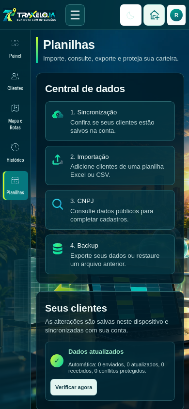
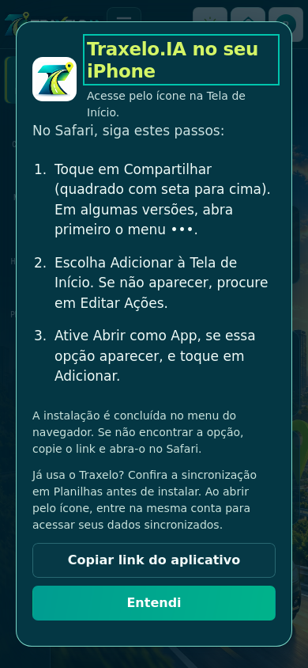

Traxelo.IA no seu iPhone
Use a versão atual pelo ícone na Tela de Início, sem passar pela App Store.
Abrir Traxelo.IA
- Abra o link no Safari ou Chrome do iPhone.
- Toque em Instalar, ao lado do botão de brilho. A opção aparece também antes do login.
- No navegador, escolha Compartilhar → Adicionar à Tela de Início.
- Ative Abrir como App, se aparecer, e confirme Adicionar.
Se já usa o Traxelo no navegador, confira a sincronização em Planilhas antes de instalar. Ao abrir pelo novo ícone, entre na mesma conta para acessar os dados sincronizados.
Um botão próprio para iPhone
O botão de instalação aparece no navegador do iPhone. Ao abrir pelo ícone instalado, ele desaparece. O aplicativo Android e sua atualização atual continuam preservados.

Cabeçalho do iPhone, com dados de teste.
Orientação de instalação.Use internet para abrir a versão atual. Se faltar conexão, uma tela de reconexão permite tentar novamente. As atualizações não recarregam uma rota em andamento.
Detalhes e verificação · Ajuda da Apple